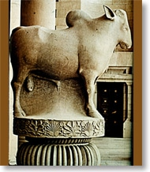
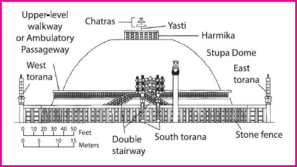

Mauryan Art and Architecture- Part 1 | 22 Oct 2019
Introduction
- The Great Mauryan ruler Ashoka embraced Buddhism (as a part of shraman tradition) and the immense Buddhist missionary activities that followed during his rule paved the way for the development of Mauryan sculptural and architectural styles.
- King Ashoka patronized the shraman tradition in the third century BCE.
- The shraman tradition refers to several Indian religious movements parallel to but separate from the historical vedic religion.
- It includes Jainism, Buddhism, and others such as Ajivikas, and Carvakas.
Background
- In 321 BC, Chandragupta Maurya, with the help of Chanakya (author of Arthashasthra) founded the Mauryan dynasty after overthrowing Nanda Dynasty.
- The Mauryan Empire was the first most powerful Indian empire to bring the entire Indian subcontinent under a single rule.
- The Mauryan empire under Chandragupta Maurya spread its boundaries into Central Asia and Persia.
- Expansion of Mauryan Empire: Chandragupta Maurya was succeeded by his son Bindusara in 298 BC who expanded the kingdom over most of present-day India, except Kalinga.
- Mauryan Dynasty under Ashoka: Bindusara's kingdom was inherited by his son Ashoka the Great in 274 B.C.
- Kalinga Invasion: During the invasion of Kalinga, Ashoka renounced bloodshed and adopted the policy of Ahimsa and adopted Buddhism.
Mauryan Art and Architecture
Mauryan architecture can be divided into Court Art and Popular Art.
Mauryan Court Art: Implies architectural works (in the form of pillars, stupas and palaces) commissioned by Mauryan rulers for political as well as religious reasons.
- Palaces: Greek historian, Megasthenes, described the palaces of the Mauryan empire as one of the greatest creations of mankind and Chinese traveler Fa Hien called Mauryan palaces as god gifted monuments.
- Persian Influence: The palace of Chandragupta Maurya was inspired by the Achaemenid palaces at Persepolis in Iran.
- Material Used: Wood was the principal building material used during the Mauryan Empire.
- Examples: The Mauryan capital at Pataliputra, Ashoka’s palace at Kumrahar, Chandragupta Maurya’s palace.
- Persian Influence: The palace of Chandragupta Maurya was inspired by the Achaemenid palaces at Persepolis in Iran.
- Pillars: Ashoka pillars, (usually made of chunar sandstone), as a symbol of the state, assumed a great significance in the entire Mauryan Empire.
- Objective: The main objective was to disseminate the Buddhist ideology and court orders in the entire Mauryan empire.
- Language: While most Ashoka pillar edicts were in Pali and Prakrit language, few were written in Greek or Aramaic language also.
- Architecture: Mauryan pillars mainly comprise of four parts:
- Shaft: A long shaft formed the base and was made up of a single piece of stone or monolith.
- Capital: On top of shaft lay the capital, which was either lotus-shaped or bell-shaped.
- Abacus: Above the capital, there was a circular or rectangular base known as the abacus.
- Capital Figure: All the capital figures (usually animals like a bull, lion, elephant, etc) are vigorous and carved standing on a square or circular abacus.
- Similarities with Persian (Achamenian) Pillars
- Polished Stones and Motifs: Both Maurya and Achaemenian pillars, used polished stones and have certain common sculpture motifs such as the lotus.
- Proclamations: Maurya’s idea of inscribing proclamations (related to Buddhist teachings and court orders) on pillars has its origin in Persian pillars.
- Third Person: Inscriptions of both empires begin in the third person and then move to the first person.
- Differences with Persian (Achamenian) Pillars
- The Capital Figure: It was absent in Mauryan pillars of the Kumhrar hall whereas pillars at Persepolis have the elaborate capital figures.
- The Shape and Ornamentation: The shape of Mauryan lotus is different from the Persian pillar.
- Pillar Surface: Most of the Persian pillars have a fluted/ ridged surface while the Mauryan pillars have a smooth surface.
- Architectural Scheme: The Achaemenid pillars were generally part of some larger architectural scheme, and bit complex and complicated, while the Ashokan pillars were simple and independent freestanding monuments.
- Shaft: Unlike Mauryan shafts which are built of monolith (single piece of stone), Persian/Achaemenian shafts were built of separate segments of stones (aggregated one above the other).
Pillar Edicts and Inscriptions
- Ashoka’s 7 pillar edicts: These were found at Topra (Delhi), Meerut, Kausambhi, Rampurva, Champaran, Mehrauli:
- Pillar Edict I: Asoka’s principle of protection to people.
- Pillar Edict II: Defines Dhamma as the minimum of sins, many virtues, compassion, liberality, truthfulness, and purity.
- Pillar Edict III: Abolishes sins of harshness, cruelty, anger, pride, etc.
- Pillar Edict IV: Deals with duties of Rajukas.
- Pillar Edict V: List of animals and birds which should not be killed on some days and another list of animals which have not to be killed at all.
- Pillar Edict VI: Dhamma policy
- Pillar Edict VII: Works done by Asoka for Dhamma policy.
- Minor Pillar Inscriptions
- Rummindei Pillar Inscription: Asokha’s visit to Lumbini & exemption of Lumbini from tax.
- Nigalisagar Pillar Inscription, Nepal: It mentions that Asoka increased the height of stupa of Buddha Konakamana to its double size.
- Major Pillar Inscriptions
- Sarnath Lion Capital: Near Varanasi was built by Ashoka in commemoration of Dhammachakrapravartana or the first sermon of Buddha.
- Vaishali Pillar, Bihar, single lion, with no inscription.
- Sankissa Pillar, Uttar Pradesh
- Lauriya-Nandangarth, Champaran, Bihar.
- Lauriya-Araraj, Champaran, Bihar
- Allahabad pillar, Uttar Pradesh.
- Stupa: Stupas were burial mounds prevalent in India from the vedic period. 
- Architecture: Stupas consist of a cylindrical drum with a circular anda and a harmika and a chhatra on the top.
- Anda: Hemispherical mound symbolic of the mound of dirt used to cover Buddha’s remains (in many stupas actual relics were used).
- Harmika: Square railing on top of the mound.
- Chhatra: Central pillar supporting a triple umbrella form.
- Material Used: The core of the stupa was made of unburnt brick while the outer surface was made by using burnt bricks, which were then covered with a thick layer of plaster and medhi and the toran were decorated with wooden sculptures.
- Examples:
- Sanchi Stupa in Madhya Pradesh is the most famous of the Ashokan stupas.
- Piprahwa Stupa in Uttar Pradesh is the oldest one.
- Stupas built after the death of Buddha: Rajagriha, Vaishali, Kapilavastu, Allakappa, Ramagrama, Vethapida, Pava, Kushinagar and Pippalivana.
- Stupa at Bairat, Rajasthan: Grand stupa with a circular mound and a circumambulatory path.
- Architecture: Stupas consist of a cylindrical drum with a circular anda and a harmika and a chhatra on the top.
Depiction of Buddha at Stupas
- Symbols: In the early stages, Buddha was represented through symbols that represented the different events of Buddha’s life like footprints, lotus thrones, chakras, stupas, etc.
- Jataka Stories: Later on, Jataka stories (stories associated with the previous birth of Buddha) were portrayed on the railings and torans of the stupas.
- The Jataka stories that find frequent depiction are Chhadanta Jataka, Sibi Jataka, Ruru Jataka, Vessantara Jataka, Vidur Jataka and Shama Jataka.
- The chief events from Buddha’s life which are narrated in the arts are birth, renunciation, enlightenment, the first sermon (dharmachakrapravartana) and mahaparinirvana (death).
Note: (Mauryan Popular Art is discussed under Mauryan Art and Architecture Part-2)